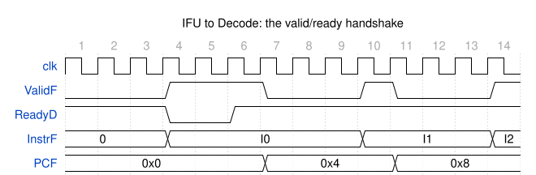
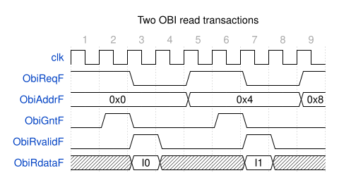
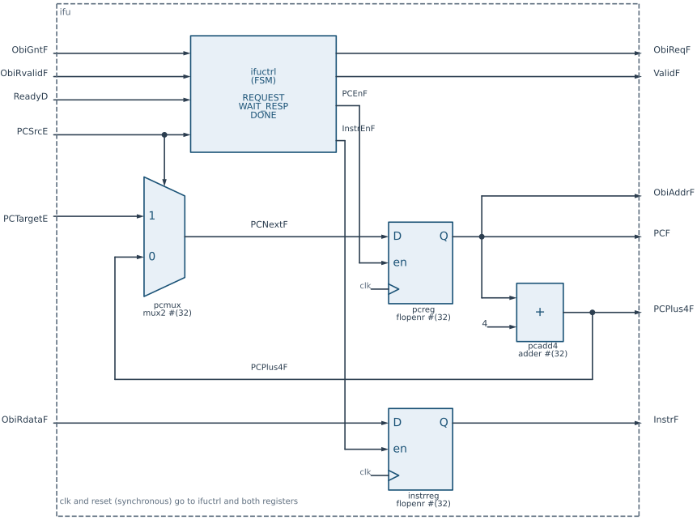
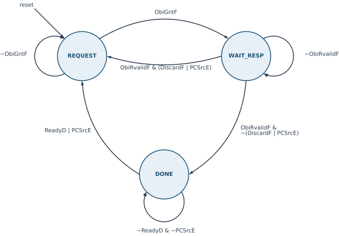
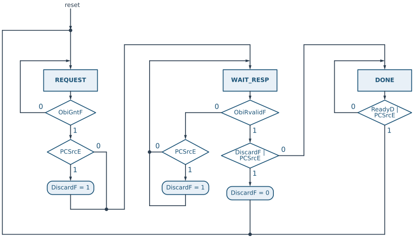
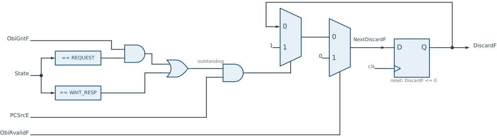
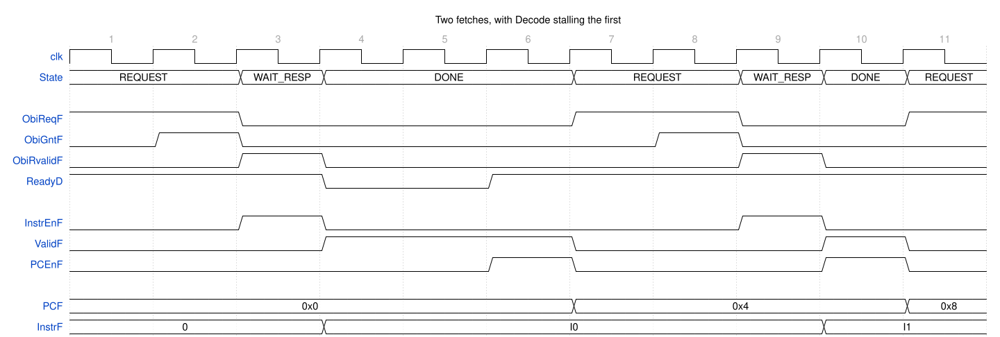
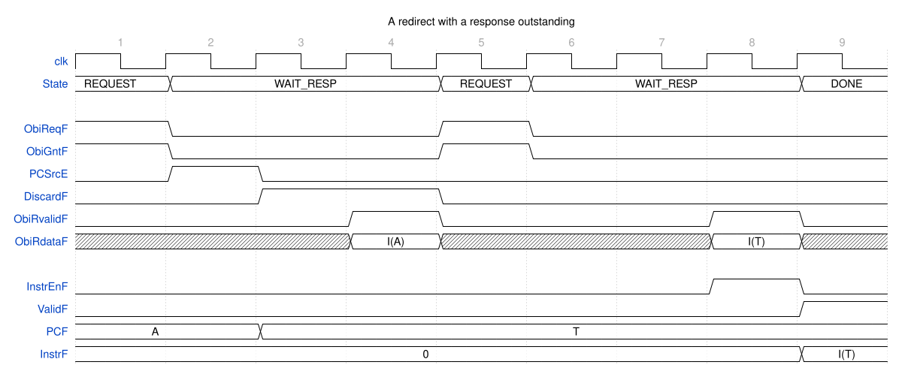

8 Instruction fetch unit
Instruction fetch unit
8.1 Goal for this week
- Know what the instruction fetch unit (IFU) does, and which other parts of the core it talks to
- Read the IFU interface: the handshake to Decode, the redirect from Execute, and the OBI port to instruction memory
- Build the IFU datapath from generic blocks:
flopenr,mux2andadder - Design the IFU controller as an FSM: states, transitions, the discard flag and the outputs
8.2 Introduction
The instruction fetch unit is the first stage of the HIPV pipeline (see the overview in the previous chapter). Before the core can execute an instruction, it must fetch it from memory, and which instruction it fetches is determined by the program counter (PC), the register that holds the address of the current instruction. RISC-V instructions are 32 bits wide, four bytes, so without jumps the program counter advances by four after every instruction.
To do this job, the IFU needs five things:
- two registers, one that holds the PC and one that holds the fetched instruction;
- an adder that computes the address of the next instruction,
PC + 4; - a multiplexer that chooses the next PC: the sequential
PC + 4, or the target of a jump or taken branch; - a port to the instruction memory, through which it sends the address and receives the instruction;
- a controller that decides when each register is loaded, when a request goes to memory, and when the fetched instruction is ready for the next stage.
The first four form the datapath, and they are built from the generic blocks of the chapter on designing with SystemVerilog. The controller is a finite state machine, and it is where most of the thinking in this chapter goes.
8.3 Interface of the IFU
The ports of the IFU fall into four groups: the handshake with the Decode stage, the redirect from the Execute stage, the stage outputs, and the port to the instruction memory. The suffix of every name says which stage the signal belongs to: F for Fetch, D for Decode, E for Execute.
module ifu (input logic clk, reset,
// pipeline handshake and redirect
input logic ReadyD,
output logic ValidF,
input logic PCSrcE,
input logic [31:0] PCTargetE,
// stage outputs to Decode
output logic [31:0] InstrF,
output logic [31:0] PCF, PCPlus4F,
// OBI master port to instruction memory
output logic ObiReqF,
input logic ObiGntF,
output logic [31:0] ObiAddrF,
input logic ObiRvalidF,
input logic [31:0] ObiRdataF);8.3.1 Handshake with Decode

InstrF holds I0 from cycle 4 to 9, but it is a valid instruction only while ValidF is high. Decode is busy in cycles 4 and 5 (ReadyD = 0), so I0 waits; it is transferred at the end of cycle 6, where both signals are high.
The IFU and Decode work at their own pace, so they agree on each transfer with two signals:
ValidF(output) says that the output of the IFU is valid: the bits onInstrFare a fetched instruction, not leftovers from an earlier one or random bits after reset.ReadyD(input) says that Decode is ready to accept a new instruction.
An instruction moves from Fetch to Decode at a clock edge where both signals are high. While ValidF is high and ReadyD is low, the IFU keeps its outputs stable and waits. Figure 8.1 shows both cases. Note that InstrF itself does not tell whether it is valid: between cycles 7 and 9 it still holds I0, which has already been handed over, and only ValidF = 0 tells Decode to ignore it. The same pair of signals connects every two neighbouring stages of HIPV, which is why the pipeline is called elastic: a slow stage simply holds back the stages in front of it.
8.3.2 Redirect from Execute
Jumps and branches are resolved in the Execute stage, and Execute tells the IFU about them with two signals:
PCSrcEis one bit: 1 means that a jump or a taken branch has occurred, so the next PC is the target; 0 means normal, sequential execution.PCTargetEis the 32-bit target address.
PCSrcE lasts exactly one clock cycle. In HIPV it is ValidEReg & ReadyM & (JumpE | JalrE | (BranchE & TakenE)): it is high only in the cycle in which the branch leaves Execute. In that same cycle the instruction in Decode is flushed (its valid bit is gated with ~PCSrcE), so in the next cycle Execute holds a bubble and PCSrcE drops back to 0. The IFU must therefore react to the redirect in the cycle it sees it. It cannot look at PCSrcE again later, which is the root of the discard flag (Section 8.5.2).
8.3.3 Stage outputs
The IFU hands three values to Decode:
InstrF, the fetched instruction;PCF, the address the instruction was fetched from;PCPlus4F, the address of the next instruction,PCF + 4.
The two PC values are not needed in the IFU, but in later stages. Execute adds an offset to PCF to compute the target of a branch or of jal, and auipc adds an immediate to it. PCPlus4F is the return address that jal and jalr write into the destination register. Both travel down the pipeline together with their instruction.
8.3.4 Port to instruction memory

ObiReqF and ObiAddrF are held until the memory grants the request with ObiGntF. In the response phase, at least one cycle later, ObiRvalidF marks the cycle in which ObiRdataF carries the instruction.
The IFU reads instructions over the OBI (Open Bus Interface) protocol, which we discuss in detail later in the semester. For now, a simplified view is enough. The IFU only reads, so it uses five signals:
| Signal | Direction | Meaning |
|---|---|---|
ObiReqF |
out | request: the IFU wants to start a read |
ObiAddrF |
out | address of the location to read |
ObiGntF |
in | grant: the memory has accepted the request |
ObiRvalidF |
in | response valid: ObiRdataF carries the read data |
ObiRdataF |
in | the data read, here an instruction |
Each read, or transaction, has two phases (Figure 8.2). In the address phase, the IFU raises ObiReqF and puts the address on ObiAddrF, and keeps both until the memory answers with ObiGntF. At the edge where ObiReqF and ObiGntF are both high, the memory has taken the address. This is the same valid/ready idea as the handshake with Decode. In the response phase, at least one cycle after the grant, the memory raises ObiRvalidF for one cycle, and in that cycle ObiRdataF holds the instruction. Outside that cycle, ObiRdataF is meaningless.
The memory decides how long each phase takes. In Figure 8.2 it grants after one wait cycle and responds one cycle after the grant, but a slower memory may need more cycles for either. Two properties are important for the controller. First, once the request is granted, the response will come, and the protocol has no way of cancelling it. Second, a response carries no tag that says which request it belongs to: responses come back in the order of the requests. HIPV keeps at most one transaction in flight at a time, so the response always belongs to the last granted request.
8.4 Structure of the IFU

pcmux, pcreg, pcadd4), the instruction register (instrreg) and the controller (ifuctrl).
Figure 8.3 shows the IFU. It has three parts.
The PC loop updates the program counter. The multiplexer pcmux chooses the next PC, PCNextF: the sequential PCPlus4F when PCSrcE is 0, and the jump target PCTargetE when it is 1. The register pcreg holds the current PC, PCF. It has an enable, PCEnF, driven by the controller, so the PC changes only when the controller allows it. The adder pcadd4 computes PCF + 4. The current PC is also the address of the memory read, so ObiAddrF is simply PCF.
The instruction register instrreg stores the fetched instruction. Its input is the memory data ObiRdataF, and its enable, InstrEnF, is also driven by the controller: the register must capture ObiRdataF in exactly the cycle in which ObiRvalidF says that it is valid.
The controller ifuctrl manages the flow through the unit: it watches the memory, Decode and Execute, and drives the two enables, the memory request and ValidF. It is the subject of Section 8.5.
8.4.1 The building blocks
The datapath uses three generic modules from rtl/generic, which we met in the chapter on designing with SystemVerilog. All three are parameterized by WIDTH, and the IFU uses them with 32 bits.
flopenr is a register with a synchronous reset and an enable. At a rising edge it clears to zero if reset is high, otherwise it loads D if en is high, and otherwise it keeps its value. The missing else branch is what makes it hold. The reset value zero is also the reset vector of HIPV: after reset, the first instruction is fetched from address 0.
module flopenr #(parameter WIDTH = 8) (
input logic clk, reset, en,
input logic [WIDTH-1:0] D,
output logic [WIDTH-1:0] Q);
always_ff @(posedge clk)
if (reset) Q <= '0;
else if (en) Q <= D;
endmodulemux2 is a two-input multiplexer: Y is D1 when S is 1 and D0 when it is 0. It is purely combinational, one continuous assignment with the conditional operator.
module mux2 #(parameter WIDTH = 8) (
input logic [WIDTH-1:0] D0, D1,
input logic S,
output logic [WIDTH-1:0] Y);
assign Y = S ? D1 : D0;
endmoduleadder adds two numbers. The result has the same width as the operands, so the carry out is dropped. For the PC this is the intended behavior: the address wraps around from 0xFFFFFFFC to 0.
module adder #(parameter WIDTH = 8) (
input logic [WIDTH-1:0] A, B,
output logic [WIDTH-1:0] Y);
assign Y = A + B;
endmodule8.4.2 The IFU in SystemVerilog
The body of ifu is purely structural: it is Figure 8.3 written as code, one instance per block, with the ports connected by name. The only internal signals are the next PC and the two enables.
logic [31:0] PCNextF;
logic PCEnF, InstrEnF;
// fetch control FSM
ifuctrl ctrl(.clk(clk), .reset(reset), .ObiGntF(ObiGntF), .ObiRvalidF(ObiRvalidF),
.ReadyD(ReadyD), .PCSrcE(PCSrcE), .ObiReqF(ObiReqF), .PCEnF(PCEnF),
.InstrEnF(InstrEnF), .ValidF(ValidF));
// next PC selection: sequential or redirect from Execute
mux2 #(32) pcmux(.D0(PCPlus4F), .D1(PCTargetE), .S(PCSrcE), .Y(PCNextF));
// PC register
flopenr #(32) pcreg(.clk(clk), .reset(reset), .en(PCEnF), .D(PCNextF), .Q(PCF));
// sequential PC
adder #(32) pcadd4(.A(PCF), .B(32'd4), .Y(PCPlus4F));
// fetched instruction register
flopenr #(32) instrreg(.clk(clk), .reset(reset), .en(InstrEnF), .D(ObiRdataF), .Q(InstrF));
// the OBI address is the current PC
assign ObiAddrF = PCF;Note that the select of pcmux is PCSrcE directly, not a signal of the controller. The controller only decides when the PC changes, through PCEnF, and the multiplexer decides to what.
8.5 The IFU controller
The controller ifuctrl manages the flow of instructions through the IFU. It has three tasks:
- generate the internal enables
InstrEnFandPCEnF, which decide when the instruction register and the PC register are loaded; - issue the memory requests through the OBI port, with
ObiReqF; - tell Decode that the IFU has finished fetching an instruction, with
ValidF.
Why do we need a controller at all, when the datapath looks so simple? For three reasons. First, fetching an instruction does not happen in one cycle. The memory needs time to grant the request and more time to respond, and the controller must watch ObiGntF and ObiRvalidF to know where the transaction is. Second, a jump can arrive at any time. The IFU must then restart fetching from the new address and, if an instruction from the old address is still on its way from memory, throw it away when it arrives. Third, Decode may not be ready to accept the instruction, and then the IFU must freeze, with its outputs stable, until it is.
All three depend on what has happened before: whether a request has been granted, whether an instruction has arrived, whether it has been handed over. The controller must remember this, so it is a finite state machine.
8.5.1 The states

A fetch goes through three steps, and each becomes a state:
REQUEST: the IFU initiates the fetch. It sends a request to the memory and waits for the memory to accept it.WAIT_RESP: the request has been accepted, and the IFU waits for the response, the instruction.DONE: the instruction has arrived and sits in the instruction register. The IFU offers it to Decode and waits until Decode takes it.
In SystemVerilog, the states are an enumerated type, encoded in two bits. Following the FSM pattern of the previous chapter, the controller has a current-state and a next-state signal. It also has a second current/next pair, DiscardF and NextDiscardF, which we explain next.
typedef enum logic [1:0] {REQUEST, WAIT_RESP, DONE} statetype;
statetype State, NextState;
logic DiscardF, NextDiscardF;Figure 8.4 shows the states and the transitions between them. The following sections derive the transitions one state at a time.
8.5.2 The discard flag
Besides the state, the controller keeps one more bit, DiscardF, a pending request to discard the instruction that is on its way. Consider a jump that arrives after the memory has granted a request, but before it has responded. The response will come, because a granted transaction cannot be cancelled, and it will carry the instruction from the old address, which is now on the wrong path. The IFU must not hand that instruction to Decode, and it must not start the fetch from the new address before the stale response has arrived. Otherwise it would take the stale response as the answer to the new request, since responses carry no tag.
The difficulty is time. PCSrcE is high for a single cycle, but on a slow memory the stale response may arrive many cycles later, when PCSrcE is long gone. So the controller needs one bit of memory that says “the response I am waiting for belongs to the wrong path”: DiscardF. It is set when PCSrcE arrives while a transaction is outstanding, which is in WAIT_RESP, or in REQUEST in the very cycle the grant arrives. It is cleared when the awaited response arrives, and that response is dropped instead of captured.
8.5.3 Transitions

DiscardF. Where no box is shown, DiscardF keeps its value.
Figure 8.5 shows the transitions as an ASM chart, one column per state, together with the updates of DiscardF in the rounded conditional boxes. Let us go through it state by state.
From REQUEST. First, we ask whether the memory has accepted our request, by checking ObiGntF. If not, we stay in REQUEST and keep asking. If it has, the transaction is committed and we move to WAIT_RESP. Before we go, we check whether a jump has occurred in this same cycle (PCSrcE). If so, the response that will come belongs to the old PC, and we raise DiscardF to 1. A jump in REQUEST without the grant needs no flag: nothing has been committed yet, the PC is loaded with the target in this cycle, and the request simply continues with the new address.
From WAIT_RESP. First, we ask whether the instruction has arrived from memory, by checking ObiRvalidF. If not, we keep waiting in WAIT_RESP. While we wait, a jump may occur, so we check PCSrcE and, if it is 1, raise DiscardF: the response we are waiting for is now stale. If the instruction has arrived, we check whether we must discard it, by reading DiscardF and PCSrcE. DiscardF covers a jump in an earlier cycle, and PCSrcE a jump in this very cycle. If either is 1, we drop the instruction, clear the pending discard, and restart the fetch by moving to REQUEST. Otherwise, the instruction is good, and we proceed to DONE.
From DONE. We have the instruction, and now we must finish with it. There are two ways out. In the normal one, ReadyD is 1: Decode takes the instruction, and we can fetch the next one. In the other, a jump has occurred, the instruction we hold is on the wrong path, and we must restart the fetch from the target. If either condition is met, we move to REQUEST; otherwise we stay in DONE. No transaction is outstanding in DONE, so DiscardF does not change here.
The flag is cleared only in WAIT_RESP, because that is the only state in which a response can arrive. On the path to DONE, the flag is already 0, so no box is needed there.
8.5.4 The controller in SystemVerilog
The code follows the chart column by column. State and DiscardF are updated in the same register block, with a synchronous reset to REQUEST and no pending discard:
// state register
always_ff @(posedge clk)
if (reset) begin
State <= REQUEST;
DiscardF <= 1'b0;
end else begin
State <= NextState;
DiscardF <= NextDiscardF;
endThe next-state logic computes both next values in one always_comb block. It starts with the defaults, hold the state and hold the flag, and each branch of the case overrides only what changes:
// next state logic
always_comb begin
NextState = State; // defaults: hold
NextDiscardF = DiscardF;
case (State)
// the grant commits the transaction on this edge, so a redirect
// in the same cycle already has a wrong-path response coming
REQUEST: begin NextState = ObiGntF ? WAIT_RESP : REQUEST;
NextDiscardF = ObiGntF & PCSrcE; end
// the awaited response clears the flag; with no response yet, a
// redirect makes the outstanding one stale
WAIT_RESP: if (ObiRvalidF) begin NextState = (DiscardF | PCSrcE) ? REQUEST : DONE;
NextDiscardF = 1'b0; end
else NextDiscardF = DiscardF | PCSrcE;
DONE: if (PCSrcE | ReadyD) NextState = REQUEST;
default: NextState = REQUEST;
endcase
endKeeping DiscardF in the same current/next pattern as State matters in WAIT_RESP. When the response arrives, the decision (DiscardF | PCSrcE) reads the current DiscardF, while the clear goes to NextDiscardF and only takes effect at the next edge. The flag is therefore still valid in the cycle in which the stale response is examined. In REQUEST the flag is always 0, so NextDiscardF = ObiGntF & PCSrcE is the same as “set it on a jump in the cycle of the grant”.

NextDiscardF logic drawn as hardware. The two priority multiplexers clear the flag on a response and set it on a jump during an outstanding transaction; otherwise the register holds its value. Since a response arrives only in WAIT_RESP, this is the same function as the case in the code.
Figure 8.6 shows what the DiscardF lines become in hardware: one flip-flop and two multiplexers. The first sets the flag when PCSrcE arrives while a transaction is outstanding; the second, which has priority, clears it when the response arrives. If neither applies, the flip-flop gets its own output back, and holds.
8.5.5 The outputs
The four outputs are combinational functions of the state, the flag and the inputs:
// outputs
assign ObiReqF = (State == REQUEST);
assign PCEnF = PCSrcE | ((State == DONE) & ReadyD);
assign InstrEnF = (State == WAIT_RESP) & ObiRvalidF & ~DiscardF & ~PCSrcE;
assign ValidF = (State == DONE) & ~PCSrcE;ObiReqFis high inREQUEST. It depends only on the state, so it is a Moore output. The request stays high until the grant moves the FSM toWAIT_RESP, exactly as the OBI address phase requires.PCEnFlets the PC change in two cases. On a jump, the PC loads the target immediately, in any state, becausepcmuxselectsPCTargetEwheneverPCSrcEis 1. InDONE, when Decode takes the instruction (ReadyD), the PC advances toPCPlus4F. The PC must not advance earlier, becausePCFis a stage output that belongs to the instruction that Decode has not taken yet.InstrEnFloads the instruction register in the cycle the response arrives (WAIT_RESPandObiRvalidF), unless the response is stale (DiscardF) or a jump arrives in the same cycle (PCSrcE). Both are exactly the conditions under which the FSM returns toREQUESTinstead of going toDONE.ValidFis high inDONE, while the instruction waits for Decode. A jump turns it off at once, in the same cycle, so that Decode never takes an instruction from the wrong path.
All outputs except ObiReqF also depend on the inputs, so they are Mealy outputs: they react in the same cycle, without waiting for a state change. That is what lets the IFU take a jump in the very cycle PCSrcE is high.
8.5.6 The controller in the waveform

REQUEST, WAIT_RESP and DONE. InstrEnF follows ObiRvalidF, and PCEnF rises only when Decode takes the instruction: in cycle 6 for the first one, after two cycles of ReadyD = 0.
Figure 8.7 shows the controller at work, on a memory that grants after one wait cycle and responds one cycle after the grant. In cycle 2 the grant arrives, and the FSM moves to WAIT_RESP. In cycle 3 the response arrives; InstrEnF is high, so at the end of the cycle the instruction register captures I0, and the FSM moves to DONE. From cycle 4, ValidF offers I0 to Decode, but Decode is busy for two cycles. In cycle 6 ReadyD rises, PCEnF follows it, and at the end of the cycle the PC advances to 0x4 and the FSM starts the next fetch.
Each instruction spends at least one cycle in each state, so the IFU fetches at most one instruction every three cycles, even with an ideal memory that grants at once. This is a deliberate simplification that keeps the controller small. A faster IFU would issue the next request before the previous response arrives, and keep the extra instructions in a small buffer.

DiscardF and loads the PC with the target T. The response for the old PC A arrives in cycle 4 and is dropped; the fetch restarts from T in cycle 5.
Figure 8.8 shows the discard flag at work, on a memory that takes three cycles to respond. In cycle 1 the request for address A is granted. In cycle 2, while the IFU waits for the response, Execute resolves a jump to T: PCSrcE is high, so PCEnF loads T into the PC, and NextDiscardF is 1. In cycle 4 the response for A arrives. DiscardF is 1, so InstrEnF stays low, the instruction register keeps its old value, and the FSM returns to REQUEST while the flag clears. From cycle 5 on, the IFU fetches from T as usual, and in cycle 9 it offers I(T) to Decode.
Without the flag, the FSM in cycle 4 would capture I(A) and offer it to Decode together with PCF = T: the wrong instruction, with the address of another one.
8.6 Summary
The IFU is a small datapath, the PC loop and the instruction register, built from the generic blocks flopenr, mux2 and adder, and a controller that decides when each of them acts. The controller is a three-state FSM with one extra bit of memory, the discard flag, which remembers a jump for as long as a stale instruction is on its way from memory.
The design makes two deliberate simplifications. It keeps one memory transaction in flight at a time, which limits it to one instruction every three cycles. And a jump in REQUEST, before the grant, changes ObiAddrF while ObiReqF is high. Strict OBI requires the address to stay stable during the address phase, but simple memories, which take the address only in the cycle of the grant, tolerate the change. Both are natural extensions for later in the course.